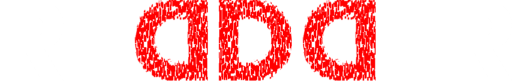

<ion-header [translucent]="true">
  <ion-toolbar>
    <div class="flex justify-center">
      
    </div>
  </ion-toolbar>
  <div *ngIf="account" class="py-1 px-2 bg-zinc-800 flex items-center opacity-50">
    <ion-icon name="person-sharp" size="small" /> 
    <span>&ensp;-</span>
    <ion-text class="text-sm text-white">
      {{type | async}}/{{account | async}}
    </ion-text>
  </div>
</ion-header>